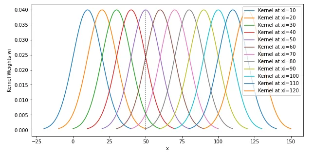
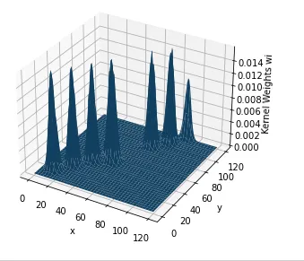

ref: https://miruetoto.github.io/yechan3/posts/3_Researches/PINKOCTO/2023-06-28-%EC%BB%A4%EB%84%90%EB%A6%AC%EA%B7%B8%EB%A0%88%EC%85%98.html
선형 모델에서는 다항식이나 삼각다항식 등 기저 함수를 훈련 표본 \(\{(x_i, y_i)\}_{i=1}^n\)과 관계없이 결정해왔다. 이와 달리 커널모델은 기저함수의 설계에 입력 표본 \(\{x_i\}_{i=1}^n\)을 이용한다.
array([-0.15543881, 0.55747067, 0.88547158, 1.18334317, 2.09097526])- 가우스 커널(Gaussian kernel)
\[K(\boldsymbol{x},\boldsymbol{c})=\exp\left(-\frac{||\boldsymbol{x}-\boldsymbol{c}||^2}{2h^2}\right)\]
가우스 커널 모델은 각 입력 표본 \(\{x_i\}_{i=1}^n\)에 가우스 커널을 배치하고, 각각의 높이 \(\{\theta_i\}_{i=1}^n\)을 파라미터로 학습한다.
커널 모델의 파라미터 수는 입력변수 \(\boldsymbol{x}\)의 차원 \(d\)에 의존하지 않으며, 훈련 표본 수 \(n\)만으로 결정된다. 매우 많은 훈련 표본을 다루는 경우에도 입력 표본 \(\{\boldsymbol{x}_i\}_{i=1}^n\)의 (이를테면 무작위로 선택한) 부분집합 \(\{\boldsymbol{c}\}_{j=1}^b\)만의 커널 중심으로 사용하여 계산 부하를 줄일 수 있다.
\[f_{\boldsymbol{\theta}}(\boldsymbol{x}) = \sum_{i=1}^b \theta_j K(\boldsymbol{x}, \boldsymbol{c}_j)\]
\[y_i= \sum_{i=1}^{5}\theta_i\exp\left(-\frac{|x-x_i|^2}{2h^2}\right)\]
(0.05180712881341244,
0.32854761450787906,
0.8050215307419648,
1.499477601582487)\(loss(\theta_0, \theta_1, \theta_3, \theta_4)\)를 최소화 하는 \(\boldsymbol{\theta}\)?
ref2: https://towardsdatascience.com/kernel-regression-from-scratch-in-python-ea0615b23918
ref3: https://www.kaggle.com/code/kunjmehta/gaussian-kernel-regression-from-scratch
What is kernel Regression?
Seeing the name, you may ask that if ‘linear’ in linear regression meant a linear function and ‘polynomial’ in polynomial regression meant a polynomial function, what does ‘kernel’ mean? Turns out, it means a kernel function! So, what is a kernel function? Simply, it is a similarity function that takes two inputs and spits out how similar they are. We will see shortly how a kernel function is used in kernel regression.
Now about kernel regression. Unlike linear and polynomial regression in which the optimal parameter vector \(c=[c₁, c₂, …, cₙ]\) needs to be learnt, kernel regression is non-parametric, meaning that it calculates the target \(yₜ\) by performing computations directly on the input \(xₜ\).
from scipy.stats import norm
import numpy as np
import pandas as pd
import matplotlib.pyplot as plt
import math
class GKR:
def __init__(self, x, y, b):
self.x = x
self.y = y
self.b = b
'''Implement the Gaussian Kernel'''
def gaussian_kernel(self, z):
return (1/math.sqrt(2*math.pi))*math.exp(-0.5*z**2)
'''Calculate weights and return prediction'''
def predict(self, X):
kernels = [self.gaussian_kernel((xi-X)/self.b) for xi in self.x]
weights = [len(self.x) * (kernel/np.sum(kernels)) for kernel in kernels]
return np.dot(weights, self.y)/len(self.x)!
gkr = GKR([10,20,30,40,50,60,70,80,90,100,110,120], [2337,2750,2301,2500,1700,2100,1100,1750,1000,1642, 2000,1932], 10)
gkr.predict(50)1995.2858171576065from scipy.stats import multivariate_normal
'''Class for Gaussian Kernel Regression'''
class GKR:
def __init__(self, x, y, b):
self.x = np.array(x)
self.y = np.array(y)
self.b = b
'''Implement the Gaussian Kernel'''
def gaussian_kernel(self, z):
return (1/np.sqrt(2*np.pi))*np.exp(-0.5*z**2)
'''Calculate weights and return prediction'''
def predict(self, X):
kernels = np.array([self.gaussian_kernel((np.linalg.norm(xi-X))/self.b) for xi in self.x])
weights = np.array([len(self.x) * (kernel/np.sum(kernels)) for kernel in kernels])
return np.dot(weights.T, self.y)/len(self.x)